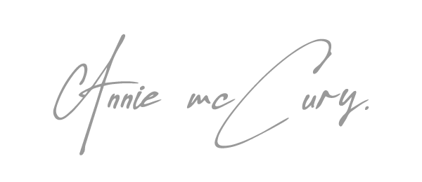

About Me

Melgitts
Hello! I'm Melgitts, a passionate photographer and videographer based in Kenya. With over 5+ years of experience in capturing life's most beautiful and fleeting moments, I strive to tell stories through my lens that resonate and inspire.
My journey into photography began with a love for capturing the world around me. Whether it's the joy of a wedding day, the serene beauty of landscapes, or the vibrant energy of urban scenes, I bring a creative and professional touch to every shot. My goal is to create images that not only capture the essence of the moment but also evoke emotions and memories that last a lifetime.
As a videographer, I specialize in creating compelling visual narratives. From corporate videos and promotional content to personal projects and event coverage, I approach each project with a keen eye for detail and a commitment to excellence. My work is characterized by dynamic storytelling, seamless editing, and a focus on delivering high-quality videos that engage and captivate audiences.
